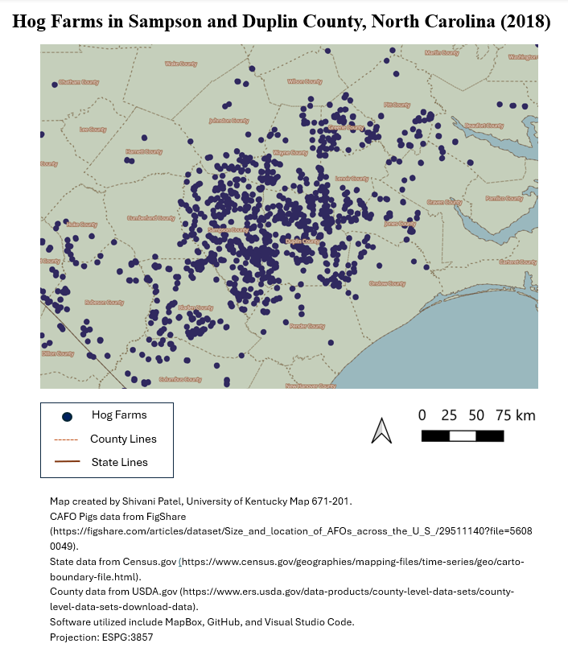

Hogs, or pigs, have become one of the most essential meat products in the livestock industry and for consumers across the country. This growing demand has led to a dramatic increase in both consumption and production over the past decade. As a result, significant challenges have emerged for individuals living in low-income rural communities across the United States, particularly for homeowners in North Carolina. View this map to explore the high concentration of hog farms in North Carolina, especially in Sampson and Duplin counties, compared with other counties and states.
Below is the final map of hog farms in Sampson and Dublin County, North Carolina. Please review the legend, scale, directional arrow, and metadata to read the map.
